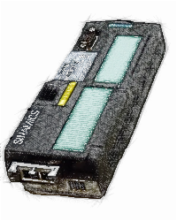
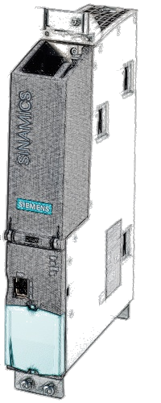
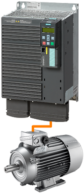
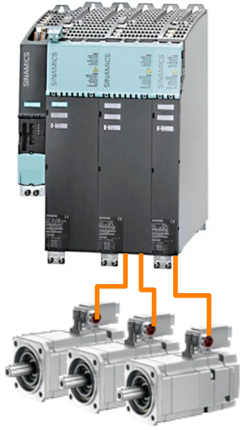
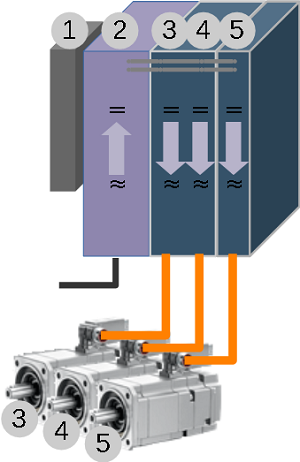
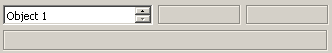

20.03.20; Mar.2020
Monitor 5
help
Area Sinamics
Connection, Interfaces:

G120:
Locate the Profinet interface
You may need to find out the Ethernet address using another software (Starter, StartDrive, TIA Portal, etc).
Rack: 0
Slot: any

S120:
You may use X127 (Ethernet Service Interface) or any Profinet interface if available
You may need to find out the Ethernet address using another software (Starter, StartDrive, TIA Portal, etc).
Rack: 0
Slot: any
Object number:

For single drives (such as Sinamics G120, G120D, G120C, G120X, etc.) the object number is not relevant.
The Control Unit is connected to the Power Module and together are a Drive Object: a system with the capability to control the motor, save parameters, receive commands, etc.

Drive systems with modular architecture, such as Sinamics S120, have a more complex architecture.
Various components are linked, via DC-Link Busbar and via Drive-Cliq interface system to control one or more motors.
In such a system the motor is not controled by a single piece of hardware, as in a 'Single Drive', more linked components are needed to control the motor.
Example:
in the left picture is represented a modular system controlling 3 motors.
- 1st module (the small one from the left) is the Control Unit
- 2nd module is the Line Module: a rectifier that converts the alternate current from the mains into direct current.
- 3rd module is a Double Motor Module: two inverters modulating the direct current from the Line Module into alternate current used to control the motors.
- 4th module is a Single Motor Module: an inverter modulating the direct current from the Line Module into alternate current used to control the motor.

(1) In Sinamics S120 systems, the Control Unit is considered a Drive Object.
In our example it will be the first Object.
(2) A modular system needs a rectifier module. Some rectifiers such as Active Line Module have parameters and are considered a Drive Object in the system.
In our example the Active Line Module (rectifier) is the 2nd Object.
(3) and (4) A double Motor Module has two independent inverter bridges, each one capable to supply the AC voltage for a motor. Each inverter has it's own parameters and, together with the motor, the motor encoder and the encoder electronics (such as a Sensor Module) are Drive Objects.
In our example, Drive Object (3) is constituted from the first inverter of the Double Motor Module, the first motor and any encoder electronics present.
Drive Object (4) is constituted from the second inverter of the Double Motor Module, the second motor and any encoder electronics present.
(5) Drive Object (5) is constituted form the last Motor Module, the last motor and the encoder electronics.

Drive Object selection
Select the Drive Object number.
The value of parameter r975.1, Drive Object Identification, is displayed on the line under the Drive Object number.